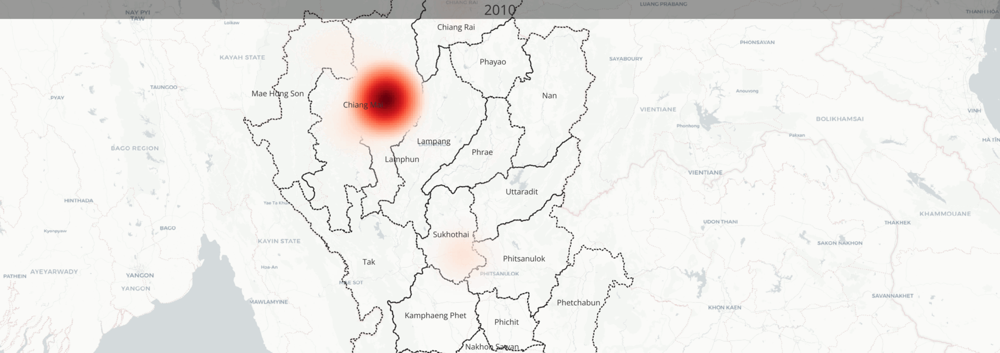

<html lang="en">
<head>
    <meta charset="UTF-8">
    <meta name="viewport" content="width=device-width, initial-scale=1.0">
    <title>Chiang Mai Province</title>
</head>
<body bgcolor ="#FFC1DA">
</body>
<a href="index.html">Homepage</a>
<a href="entertainment.html">entertainment</a>
<a href="contact.html">Contact</a>
<a href="qgis2web_2025_05_02-12_12_00_158770/qgis2web.html">qgis2web</a>

   <center><h1>Chiang Mai Province</h1></center>
   <h2>This web wiil show some data in Chiang Mai Province</h2>
   <h2>1.District in Chiang Mai</h2>
   <ol>
    <li>Mueang Chiang Mai</li>
    <li>Chom Thong</li>
    <li>Mae Chaem</li>
    <li>Chiang Dao</li>
    <li>Doi Saket</li>
    <li>Mae Taeng</li>
    <li>Mae Rim</li>
    <li>Samoeng</li>
    <li>Fang</li>
    <li>Mae Ai</li>
    <li>Phrao</li>
    <li>San Pa Tong</li>
    <li>San Kamphaeng</li>
    <li>San Sai</li>
    <li>Hang Dong</li>
    <li>Hot</li>
    <li>Doi Tao</li>
    <li>Omkoi</li>
    <li>Saraphi</li>
    <li>Wiang Haeng</li>
    <li>Doi Lo</li>
    <li>Galyani Vadhana</li>
    <li>Chai Prakan</li>
    <li>Mae Wang</li>
    <li>Mae On</li>
   </ol>

   
   

   <h2>2.Map of Village in Chiang Mai (click at qgis2web button)</h2>
   <a href="qgis2web_2025_05_02-12_12_00_158770/qgis2web.html">qgis2web</a>
   <h2>3.Time-series (Tourist) in Chiang Mai</h2>
   